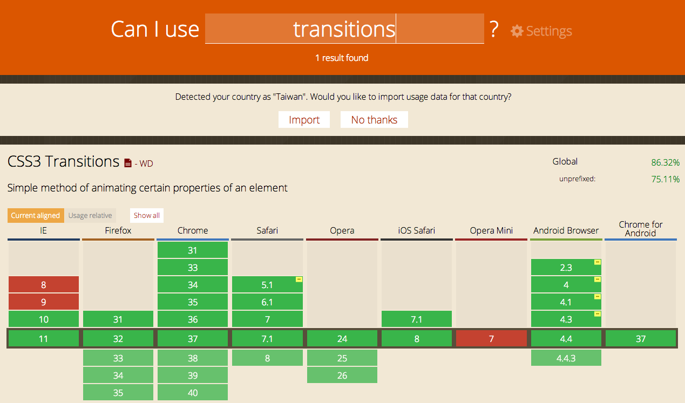

台中前端社群
Taichung Frontend Group
Transition 與 Animation
漸變效果與動畫
首先討論支援的瀏覽器

IE10以下不支援!
Transition漸變效果
就是某個原件從A狀態轉變成B狀態的效果
- 需要指定改變的屬性, 還有開始與結束狀態
- 需要指定時間，例如完成漸變需要2秒(2s)
transition-delay 延遲啟動
單位s(秒)或ms(毫秒)
transition-timing-function 漸變速度
- linear: 同等速度
- ease: 慢快慢
- ease-in: 慢 -> 快
- ease-out: 快 -> 慢
- ease-in-out: 慢快慢
- cubie-bezier: 自訂
也可以全部塞在一起
- transition: 屬性 時間 延遲 速度
- transition: all 3s 2s ease-in
- 最好按照順序，否則IE會失效
CSS3 Animation
IE10以下一樣不支援
與漸變效果差異的地方
- 動畫需要指定影格名稱
- 漸變效果無法控制"影格"
- 漸變效果無法"移動"
- 漸變效果無法"旋轉"
- 漸變效果無法"傾斜"
- 漸變效果無法指定"播放次數"
- 漸變效果無法指定"播放方向"
- 漸變效果無法設定"開始與暫停"
- 漸變效果無法設定"完成的樣式"
影格與指定名稱
- animation-name: 影格名稱
- @keyframes 影格名稱 { from {起始屬性} to {結束屬性}}
- @keyframes 影格名稱 { 0% {屬性1} 50% {屬性3} 100% {屬性4} }
全部整合在一起
animation: 名稱 時間 速度 延遲 重複次數 方向 起始結束狀態
name duration timing-function delay iteration-count direction fill-mode
IE系列必須按照以上順序
變形
Transform
- translateX,Y: X軸Y軸移動
- rotate: 旋轉
- scaleX,Y: 放大縮小
- skewX,Y: 軸向轉變
到底CSS3能夠做什麼運用?
範例DEMO example_11